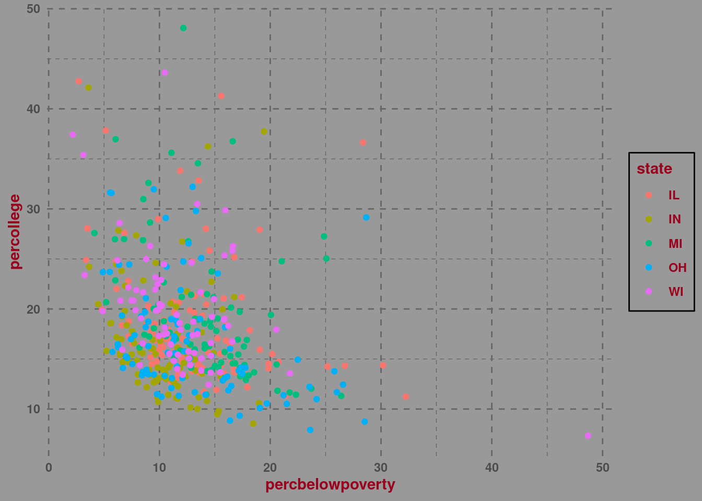

We know how to make various plots to display the data and how to control the attributes and scales. Now we’ll move on to additional layers in ggplot2. We’ll continue working with the midwest dataset from the previous lesson.
Faceting
We’ll start with faceting as it is pretty straightforward. Plotting often involves including a lot of information in a single plot. Sometimes the amount of information might be too much to easily comprehend. One of the ways in which we can try to deal with this is by faceting. It allows us to create a separate subplot for each level of a factor variable. The two basic functions for faceting in ggplot2 are facet_wrap() and facet_grid(). The main difference is in their syntax and how they display facets. The first one takes a formula-like syntax: facet_wrap(~variable). It automatically tries to fit rows and columns and adjust the number of rows and colums (you can customize that if you want). The second one needs you to specify the rows and columns manually: facet_grid(rows = vars(variable1), cols = vars(variable2).
For example lets say we are interested in relation between percentage of children below poverty and percentage of people with college degree in all 5 state with a split between metro and non-metro areas. That’s a lot to cram into one plot so we can use faceting to make the plot more readable. Using facet_wrap() is super easy here:
library(tidyverse)
── Attaching core tidyverse packages ──────────────────────── tidyverse 2.0.0 ──
✔ dplyr 1.1.1 ✔ readr 2.1.4
✔ forcats 1.0.0 ✔ stringr 1.5.0
✔ ggplot2 3.4.2 ✔ tibble 3.2.1
✔ lubridate 1.9.2 ✔ tidyr 1.3.0
✔ purrr 1.0.1
── Conflicts ────────────────────────────────────────── tidyverse_conflicts() ──
✖ dplyr::filter() masks stats::filter()
✖ dplyr::lag() masks stats::lag()
ℹ Use the conflicted package (<http://conflicted.r-lib.org/>) to force all conflicts to become errors
midwest %>%ggplot(aes(x = percollege, y = percchildbelowpovert, color =as.factor(inmetro))) +geom_point() +facet_wrap(~state)
If we wanted to display the same information but with facet_grid() we could do it like this (lets put inmetro as one of facets instead of color as well):
By default R will fix x and y axis across all facets (which is generally good!). If you want to free any axis by setting the scales argument to free_x or free_y or free to free both axes.
Statistics
This layer allows us to add various statistics like means and confidence intervals to our plots. Functions in this layer start with stat_ although sometimes they can be called within geoms as well.
One obvious way in which we can include summary statistics on our plot is to calculate them first and then pipe them to the plot. Two additional geoms that might come in handy here are geom_errorbar() and geom_pointrange() which allow you to display ranges (the second one with a mid point as well). We can make a very classic plot often called a dynamite plot to show means and a range of 1 standard error like this:
You can see how they resemble dynamites! Recall that geom_col() by default will start y axis from 0. If we wanted to use geom_pointrange() we could do everything in a single geom:
We get much more information though when we show the entire distribution the ranges for standard errors become tiny. Also notice how geom_violin() specifies a new dataset, midwest rather than work on summaries. This again shows how ggplot2 is like building lego - you can mix blocks and layers to build whatever you want.
Generally, dynamite plots are discouraged now. One problem with them is that they limit the number of information. A given mean can come from any number of underlying distributions and what those distributions are matters! An interpretation of a mean will differ depending on whether the distribution is nicely symmetrical or heavily skewed. What’s more, bar plots aren’t really the best way to display things like means. When we look at a bar it usually implies some count or proportion rather than a point estimate. A point estimate is, well… a point so maybe using points is better here.
We don’t need to calculate all the statistics we want to display before we make the plot. For the most common things we can easily do it inside the plot by using stat_summary(). This function needs you to specify what function you want to plot (e.g. mean for average value or mean_se for average value and standard error range around it) and what geometry you want to show it. There are two arguments for specifying functions in stat_summary() and they differ in what they output. The first one, fun.data always returns a ymin, y and ymax values so it’s perfect for displaying ranges around some value (like a mean and confidence interval). The second one, fun will return a single value y. You can add your own fun.min and fun.max if you want to. Lets remake the same plot as above but this time using stat_summary():
midwest %>%ggplot(aes(x = state, y = percollege, color = state, fill = state)) +geom_violin(alpha = .6) +stat_summary(fun.data ="mean_se", color ="black")
Yay, we got an identical plot!
Another function called stat_function() allows you to apply a custom statistical function and plot it. For example you can use it to plot cumulative density plot. The ecdf() function creates a function to generate the cumulative density function from a variable. Important thing about it is that it creates a function and not a vector of values or a dataframe. We can then use it inside stat_function() and add a line geom:
test <-ecdf(midwest$percollege)midwest %>%ggplot(aes(x = percollege)) +stat_function(fun = test, geom ="line")
Coordinates
This layer controls how the coordinates of the plot should be handled. Most likely you are used to plots with the cartesian space: an x and y axis that are perpendicular. However you can change that e.g. by fising the ratio of x to y axis, zooming in on a particualr part of the plot or even bending the axis altogether. All of this is handled in this layer. Its functions start with coord_. The basic one is coord_cartesian():
Notice that this time we did not get any warnings about missing data. This way we can e.g. adjust the axis limits of a bar plot without losing the bars.
Now for slightly weirder stuff. What if we bended the coordinates so that they are no longer simple cartesian but polar instead (imagine taking the x axis and bending it into a circle)? We get something like this:
midwest %>%ggplot(aes(x = state, fill = state)) +geom_bar(width =1) +coord_polar()
This isn’t really a common thing to do in plots. Some situations in which it might be justified is with some circular forms, e.g. when displaying hours
Theme
The final layer, called theme, controls all the non-data part of the plot: setting fonts, typeface, text size, controlling the background color, plot legend and the grid. It’s generally controlled within the theme() function. And there’s a lot to control! Theme layer is huge. If you look at the documentation of theme() function you can see just how many things can be customized in it. Apart from a few exceptions setting anything inside theme() is done by setting a specific argument to an appropriate type of object on the plot. There are 3 general types: element_line(), element_text() and element_rect(). Inside each of these 3 functions you specify everything you want to customize. If you want to turn off an element you can use element_blank(). The only exception is the legend which for some reason is turned off by using legend.position = "none" (by the way I think this is one of the most googled things by R users). You can see all of them used below:
midwest %>%ggplot(aes(x = percbelowpoverty, y = percollege, color = state)) +geom_point() +labs(title ="Relation between percent below poverty and\npercent with college education in each state", x ="Percent below poverty", y ="Percent with college degree") +theme(panel.grid.minor =element_blank(),panel.grid.major =element_line(color ="grey60"),title =element_text(face ="bold", colour ="#5f0f40"),panel.background =element_rect(fill ="#AAAAAA"),plot.background =element_rect(fill ="#AAAAAA"),legend.background =element_rect(fill ="#AAAAAA"),legend.key =element_rect(fill ="#AAAAAA"),legend.position ="top")
Apart from the theme() function there is a number of pre-specified themes that you can use. They allow you to quickly get a specific theme without needing to change everything manually. They can also be a good start for further customization. Lets see some examples:
theme_minimal():
midwest %>%ggplot(aes(x = percbelowpoverty, y = percollege, color = state)) +geom_point() +theme_minimal()
theme_bw():
midwest %>%ggplot(aes(x = percbelowpoverty, y = percollege, color = state)) +geom_point() +theme_bw()
theme_classic():
midwest %>%ggplot(aes(x = percbelowpoverty, y = percollege, color = state)) +geom_point() +theme_classic()
You can also create your own theme! You just need to create your own function:
theme_own <-function() {theme_minimal() +theme(text =element_text(face ="bold", color ="#9a031e"),panel.background =element_rect(fill ="grey60", color ="grey60"),plot.background =element_rect(fill ="grey60", color ="grey60"),legend.background =element_rect(fill ="grey60"),legend.key =element_rect(fill ="grey60"),panel.grid =element_line(linetype ="dashed", color ="grey40"))}
Now we can use it in our plots!
midwest %>%ggplot(aes(x = percbelowpoverty, y = percollege, color = state)) +geom_point() +theme_own()

Fonts in R
A note on working with fonts: if you want to work with more fonts than the built-in ones you will have to load them into R. This can sometimes prove quite problematic. The showtext package makes it much easier to work with e.g. Google fonts. Fonts are declared inside theme() in family argument.
library(showtext)
Loading required package: sysfonts
Loading required package: showtextdb
#load the Merriweather fontfont_add_google("Merriweather")#set the fonts to automatically appearshowtext_auto()#set the font inside our plotmidwest %>%ggplot(aes(x = percbelowpoverty, y = percollege, color = state)) +geom_point() +labs(title ="Relation between percent below poverty and\npercent with college education in each state") +theme(text =element_text(family ="Merriweather"))